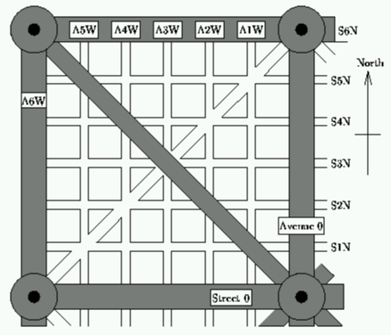

<turn_command> ::= TURN [HALF
<straight_command> ::= GO [STRAIGHT] n n 99
| City Directions |
When driving through a city, an intersection usually offers one the choice of going straight on or turning left or right through 90 degrees. However some cities have diagonal roads, thus at intersections involving these one may be able to turn through 45 degrees (``half'') or through 135 degrees (``sharp'').
Consider such a city with Avenues running north-south, Streets running east-west and Boulevards running diagonally. The central Avenue and Street are labelled Zero (A0 and S0). Other roads are labelled relative to these, thus A3W is the third avenue to the west of A0. There are 6 Boulevards--two passing through the centre of the city, and 4 others, one in each quadrant. The diagram below shows the northwest quadrant of a small version of such a city.

The roads marked in grey are considered to be throughways. These are elevated for most of their length, thus it is possible to cross them easily, however they always intersect each other at a circle, which is shared by all other roads that meet at that intersection. You may only enter or leave them by turning left (sharp left in the case of boulevards). You may not stop on them for any reason. There are no restrictions on turns for other roads.
This system allows a very simple method of determining one's current position and a way of arriving at one's destination. Position can be specified in terms of the last intersection you passed through (the numbers of the Avenue and Street that meet there) and your current heading, which can be one of: north (N), northeast (NE), east (E), southeast (SE), south (S), southwest (SW), west (W) and northwest (NW). Directions can then be given in terms of how many intersections to pass through and which turns to make. However, the locals have an infuriating habit of giving incorrect or invalid directions, although it cannot be determined whether this is deliberate or accidental. Directions should (but don't always) conform to the following simple grammar:
<command> ::= <turn_command><straight_command>
<turn_command> ::= TURN [HALF
<straight_command> ::= GO [STRAIGHT] n n 99
Write a program that will simulate driving through such a city, by tracking your position and heading as you follow a set of directions (commands). Each quadrant of the city will be 50 blocks by 50 blocks, thus the entire city will be 100 blocks by 100 blocks, the outer throughways will be labelled Fifty and the major and minor boulevards will cross at roads labelled Twentyfive. You will be told your starting position and heading and then given a series of directions. If a direction does not follow the above grammar, or would involve an illegal or impossible turn then ignore it. At no stage will directions take you out of the confines of the city.
Input will consist of a series of scenarios.
Each scenario will consist of a position and a
heading and will be followed by a series of directions (commands),
each on a separate line. If either of the roads involved is one of the
central roads (A0, S0), they will be labelled N or E as appropriate.
Note that you may assume that you have just left the intersection
specified. The GO <n> command means that you pass through <n>
intersections.
Each scenario will be terminated by a line consisting of the word STOP.
The file will be terminated by a line consisting of the word END only.
Input data will follow the format shown below, except that more than one space may occur where only one is shown. No line will be longer than 80 characters.
Output will consist of a series of lines, one for each scenario. Each line will consist of a position and a heading in the same format as the input. If the final stopping place is illegal, report `Illegal stopping place' as the answer.
A2W S1N E TURN SHARP LEFT GO 1 TURN RIGHT TURN LEFT TURN SHARP LEFT GO 1 TURN LEFT STOP A2W S1N W GO STRAIGHT 2 TURN LEFT GO ON 2 TURN HALF LEFT TURN LEFT GO 2 STOP END
A3W S1N E Illegal stopping place